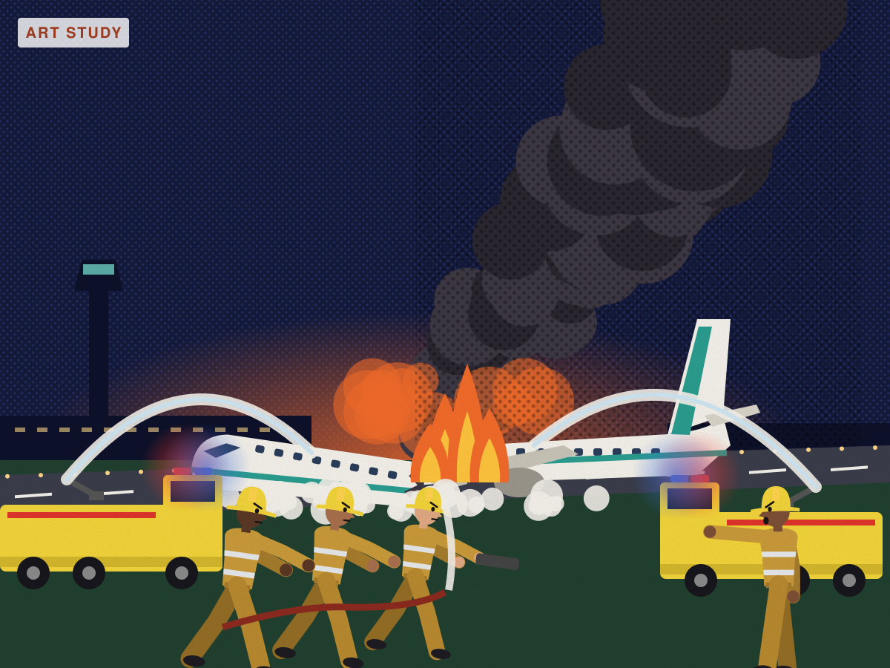
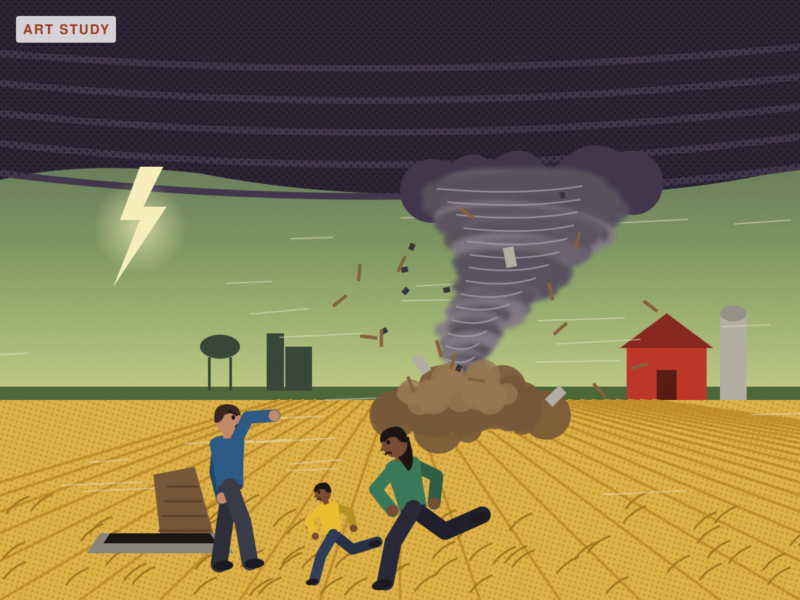
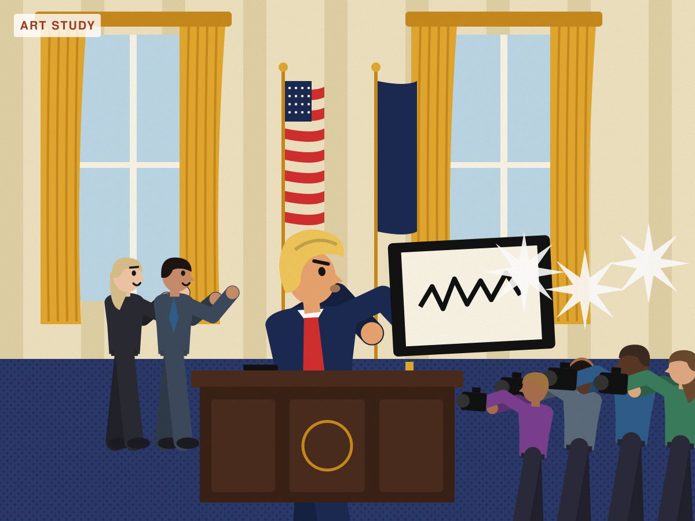
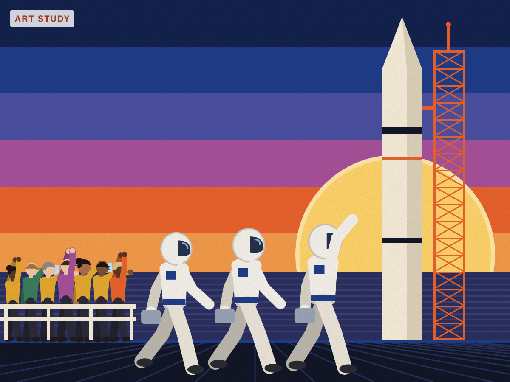
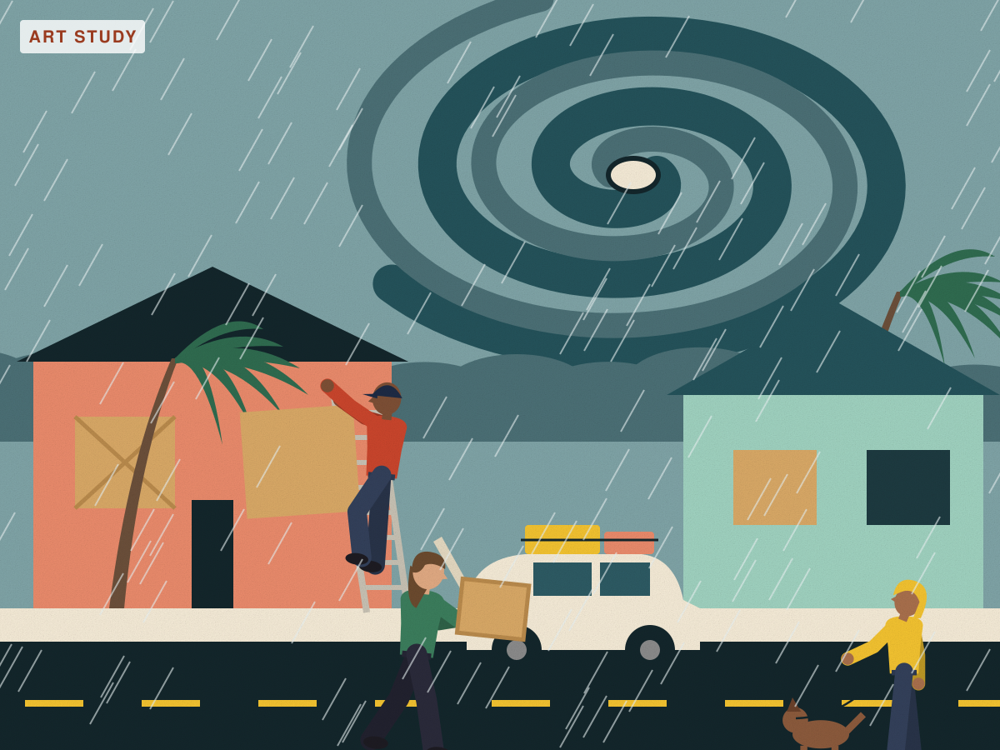
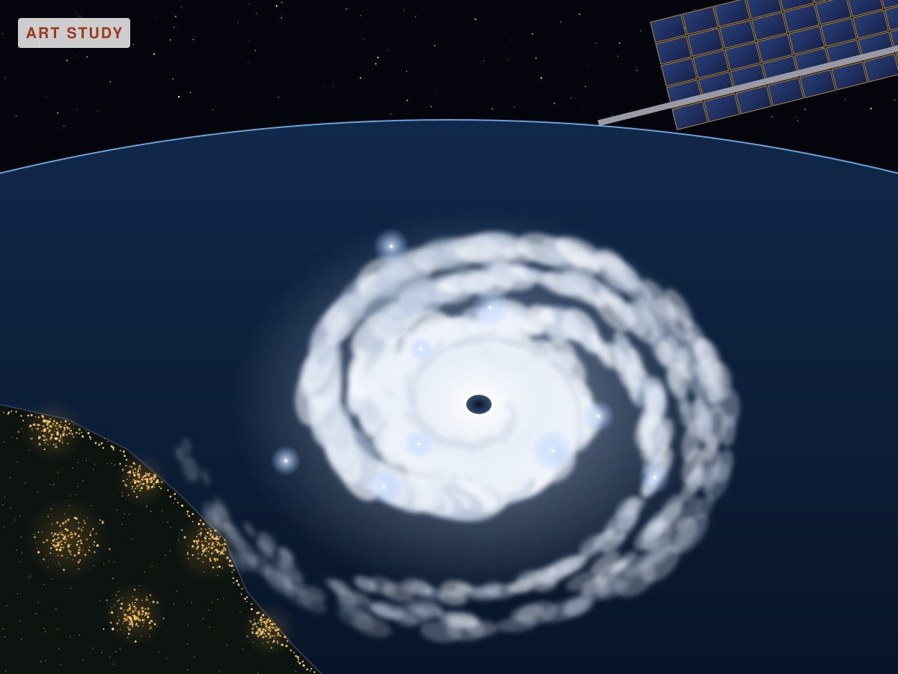

Poster-style studies
Round 3 (newest): literal headline scenes with recognizable people, and a respectful treatment of disasters. These scenes are made up but realistic; the Oval Office scene is a recurring, widely photographed act, not a specific day's news.



Round 2


Round 1, for comparison
Round 1 · UN at dusk
Round 1 · Launch

Round 1 · Hurricane